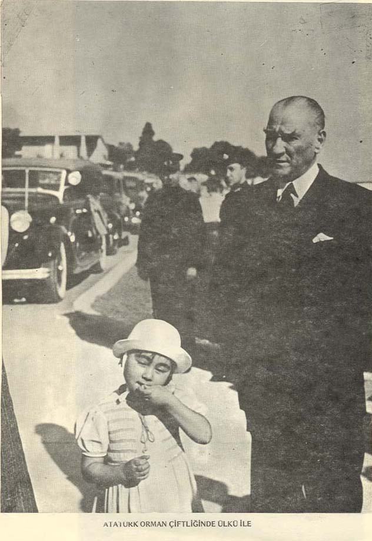

Atatürk, Ülkü ve Foxy
50 Bölümlük Hafıza Oyunu
Koleksiyon
0 / 16 kart
?
1 / 16
Foxy
Toplam Yıldız
0 / 150
Bu bölgede0 / 10
Bölüm1
Hamle0/5
Eş0/3
EZBERLE!3
Bölüm 1
Aferin!
Süre0:00
Hamle0
Yeni kart açıldı!
Biliyor muydun?
Tebrikler!
50 bölümün hepsini tamamladın.
Foxy ve Ülkü seninle gurur duyuyor!
Toplam Yıldız0
Adını yaz
Sertifikanın üzerinde adın yazacak.
Başarı Belgesi
—
Atatürk, Ülkü ve Foxy hafıza oyununun 50 bölümünü tamamlayarak
Hafıza Şampiyonuunvanını kazanmıştır.
0 / 150 yıldız
—
Ekran görüntüsü alıp saklayabilir veya paylaşabilirsin.